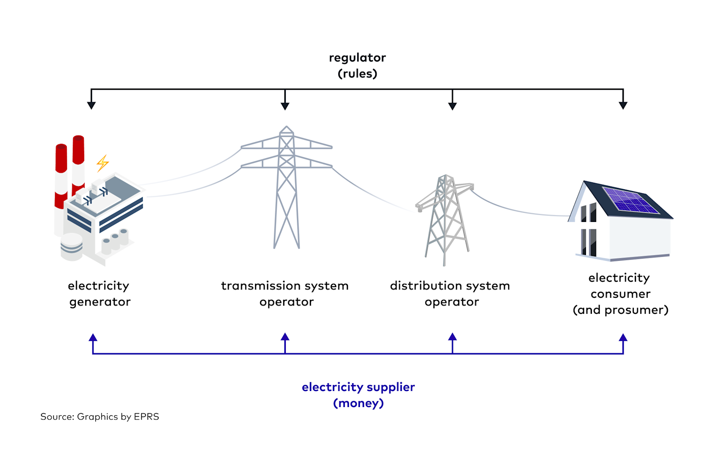
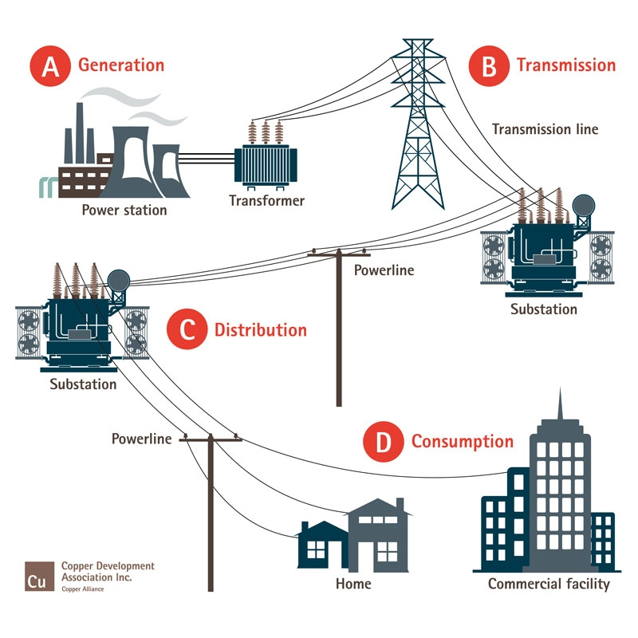
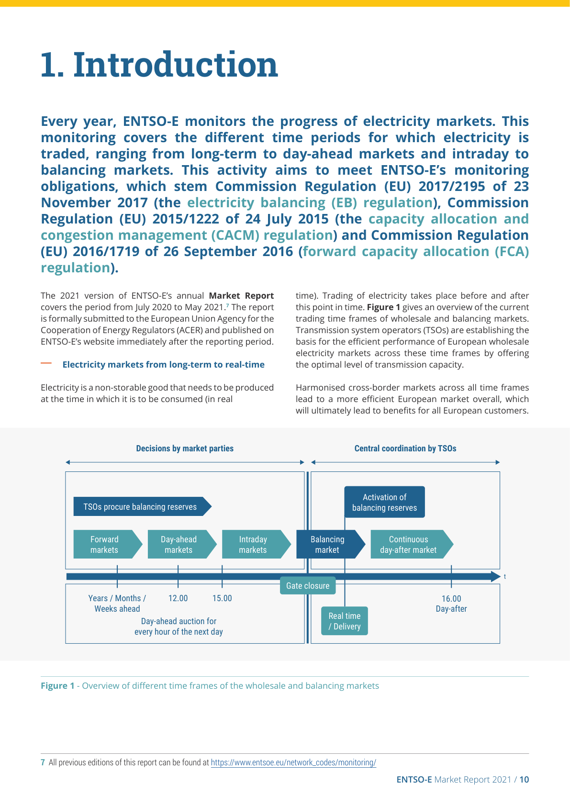
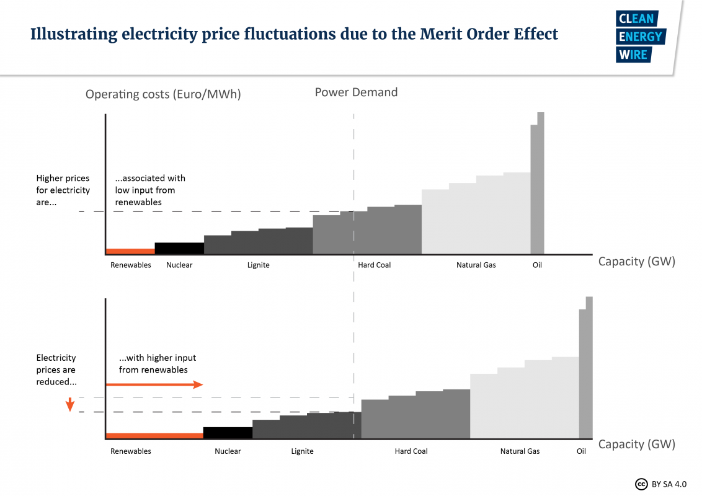

Energy System Optimization with Julia
Hamburg University of Applied Science - Summer 2026
The electricity market is the invisible backbone of modern society, determining how electricity flows from generators to our homes and businesses. Unlike other commodities, electricity cannot be easily stored and must be produced exactly when it’s consumed, making this market uniquely complex and fascinating.
Key Questions We’ll Answer:
An electricity market is a sophisticated system where electricity is bought, sold, and traded as a commodity, connecting producers with consumers through organized exchanges and bilateral contracts.
Unique Characteristics:

Electricity grid infrastructure diagram showing the flow from electricity generator through transmission and distribution operators to consumers, regulated by rules and facilitated by suppliers financially.
Source: Illustrative diagram for this lecture; conceptual basis — ETPA grid operators, Eurelectric. See img/SOURCES.md.
The electricity supply chain consists of four distinct stages, each with specific infrastructure and responsibilities:
1. Generation: Power plants convert various energy sources into electricity
2. Transmission: High-voltage networks (110-400 kV) transport electricity over long distances
3. Distribution: Medium and low-voltage networks deliver power locally
4. Consumption: End users receive electricity through meters and local connections

Detailed diagram showing electricity grid infrastructure stages from generation at power stations to transmission, distribution, and final consumption in homes and commercial buildings.
Source: Illustrative diagram for this lecture; conceptual basis — SMARD electricity market. See img/SOURCES.md.
| Type | Name | Product | Activation | Pricing | Platform |
|---|---|---|---|---|---|
| FCR | Frequency Containment Reserve (Primärreserve) | Power-only (positive & negative together) | Automated | Pay-as-clear | National |
| aFRR | Automatic Frequency Restoration Reserve (Sekundärreserve) | Separate power & energy (positive & negative) | Automated | Pay-as-bid | PICASSO |
| mFRR | Manual Frequency Restoration Reserve (Minutenreserve) | Separate power & energy (positive & negative) | Manual | Pay-as-bid | MARI |
PICASSO (Platform for the International Coordination of Automatic Frequency Restoration and Stable System Operation): Automatically activates secondary reserve across European borders in real-time.
MARI (Manually Activated Reserves Initiative): Central European platform for market-based exchange of minute reserve (mFRR), activated manually by TSOs in response to system needs.

Overview of the organization of European electricity balancing markets and their relation to the wholesale electricity market.
Source: ENTSO-E Market Report 2021, Figure 1 — ENTSO-E monitoring. Related analysis: Tolstrup et al. (2020).
Source: Illustrative stock image for trading operations (lecture compilation). See img/SOURCES.md.
Renewables push expensive plants out of the market, reducing overall prices.
Example: In 2020, renewables provided 45% of German electricity, reducing average wholesale prices by an estimated €20/MWh compared to a fossil-only system.
Key Insight: Low marginal cost renewables enter first, depressing prices during high output periods but creating steep price ramps in scarcity.

Electricity price fluctuations illustrated by merit order effect with varied renewable energy input and operating costs per capacity.
Source: Illustrative diagram for this lecture; conceptual basis — Next Kraftwerke merit order, Clean Energy Wire. See img/SOURCES.md.
Primary Function: Maintain grid stability across large regions
Key Responsibilities:
Primary Function: Deliver electricity to end consumers
Key Responsibilities:
Example: Germany has 4 TSOs managing control areas, while over 800 DSOs handle local distribution
Variability: Wind and solar output depends on weather conditions
Near-Zero Marginal Costs: Renewables bid at €0-5/MWh, displacing conventional plants
Flexibility Services:
Grid Infrastructure:
Note
Windfall profits are unusually high revenues that generators earn when market prices spike far above their marginal production costs. During the 2021–2022 crisis, many renewables and low-marginal-cost plants were still paid the high marginal market price (merit order), even though their operating costs did not rise with gas. Governments responded with temporary revenue caps and windfall taxes (e.g. EU emergency measures in 2022) to fund consumer relief — while debating whether such interventions distort long-term investment signals.
Arguments for Marginal Pricing:
Arguments Against:
Note
The 2024 EU electricity market reform explicitly kept marginal pricing in day-ahead markets. The debate has shifted toward complementary instruments (CfDs, PPAs, capacity mechanisms) rather than replacing the merit-order principle.
Critics of Increasing Interventions:
Proponents of Interventions:
Purpose: Reward investors for needed power plant capacities that run rarely but are system-critical
Criticisms:
Consensus: With further phase-out of conventional generation, alternatives for supply security are required
Note
Germany (2025–2026): The federal government is introducing a capacity mechanism under the Stromversorgungssicherheits- und Kapazitätsgesetz (StromVKG). First auctions for long-duration capacity (≥10 h) are planned from September 2026, with broader technology-neutral capacity auctions to follow. The aim is to secure dispatchable backup capacity as coal and nuclear exit while renewables share grows.
Note
A Contract for Difference (CfD) is a two-way hedge between a generator and a counterparty (often a public entity). A strike price is agreed in advance. The plant still sells electricity on the wholesale market, but any difference between the market price and the strike price is settled afterwards: if the market price is below the strike price, the generator receives a top-up; if it is above, excess revenues are typically returned (under EU rules, often to consumers). This gives investors revenue stability without removing plants from market dispatch. Since 2024, EU law requires new publicly supported renewable and low-carbon investments to use two-way CfDs (Regulation (EU) 2024/1747).
The electricity market needs a balanced framework that:
The electricity market directly impacts everyone - from the prices we pay to the reliability of our power supply and the pace of climate action.
For the full course bibliography, see the literature list.
Lecture XIII - Electricity Markets | Dr. Tobias Cors | Home